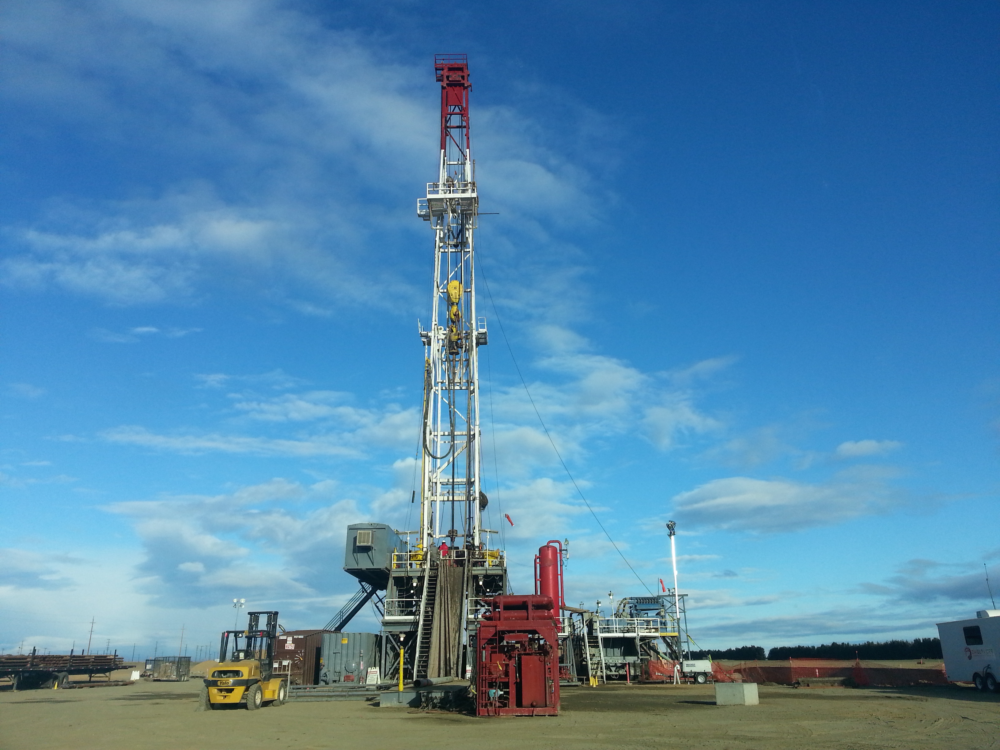
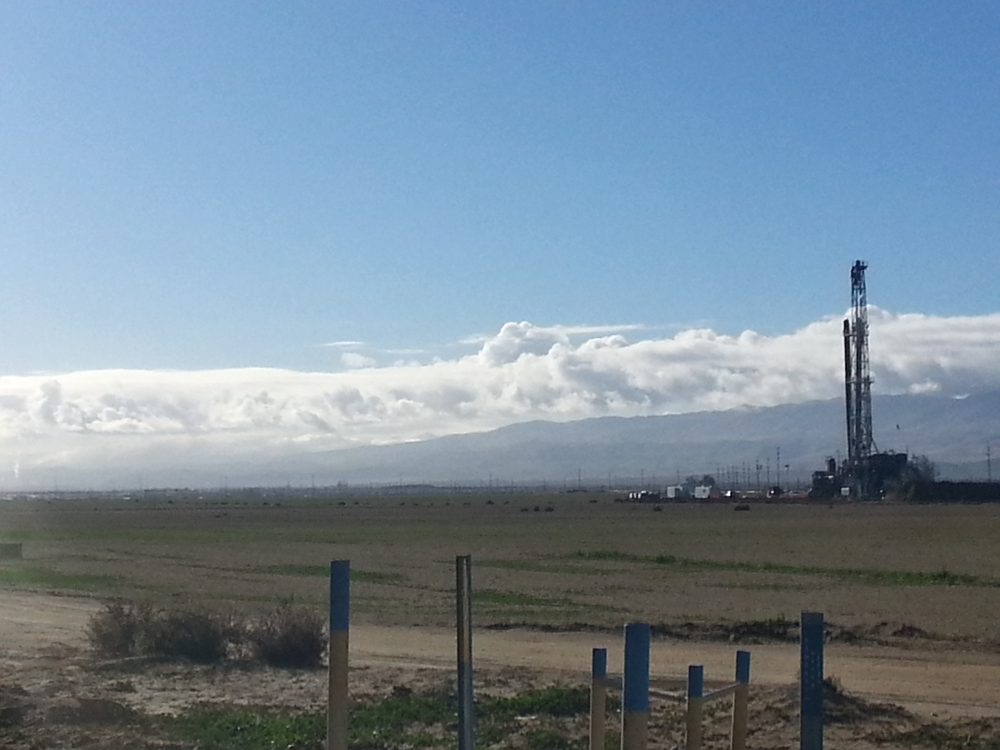
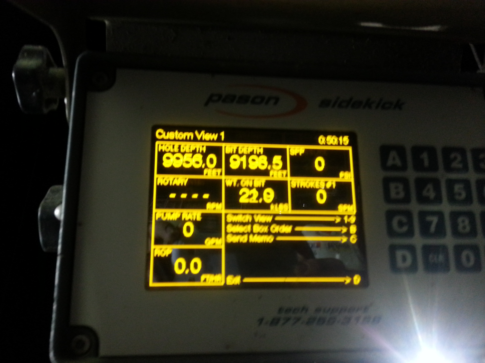

chemical
I'm a certified Professional Chemical Engineer in the state of California. I mainly did this because I was interested in becoming a P.E. in California, and there were salary benefits at a future government job I could obtain. As demonstrated, patience is not one of my best traits, and after applying about 15-20 jobs where I felt that someone was always in line to take the role, I decided against continuing this strategy and left for private employment. Also I was pretty happy to leave Bakersfield and get back to my partner, family, and friends in the Bay. Especially with recent declines in oil prices, I'm really happy to have transitioned out of a job with so much glut.

I do still love Chemical Engineering. It's a very interesting profession that deals with lots of the world's manufacturing processes. Many chemical engineers often work as petroleum engineers, and there are very few schools that teach specifically petroleum engineering, but it is a niche profession that will always attract some of the hardiest incredible people. I was fascinated to learn about all the various different kinds of person I met in the oilfields.

Oilrigs are beautiful machines, the combine motility and function, they have subdivided tasks into different trucks. I don't have many pictures of these, but many operations don't even require these large rigs anymore and can be accomplished with trucks with large coiled tubes , which can function to pump cement, oil, water, insert dynamite, and do various other oil-field functions very handily.

We have maybe very little context for oilfields, some have driven past large fields in Los Angeles or the Central Valley. In Bakersfield, the lines between oilfield land and public and private land blur. Everyone is touched by oil, many of the city's population work in a oil based profession, and that leads many to seek deals or consider oil development on their property, whether that property is rural, farm, industrial, civil, or even suburban.

I was also kind of surprised to learn but it made sense that these rigs drill 24/7, every does 12 hours on and 12 hours off. It makes sense though! You need to maximum the time this expensive equipment is being used, and the moment it's done at one location, it needs to move to another. The system is highly optimized. Additionally, wells and all the personnel and equipment costs typically pay themselves back after 2-3 months of oil production, the rest is pure profit.
And these go super deep. This is a tag nearly 10000 ft down, but many are down at 1000-3000 ft deep, and the deepwater horizon well was at 5,000 ft, and the deepest wells ever dug are a Russian exploration well in Siberia called Kola Superdeep Borehole which is 40,230 and was completed in 1989 before some new deep weels in the Middle East started to go even deeper.

This is a stub, there's more coming